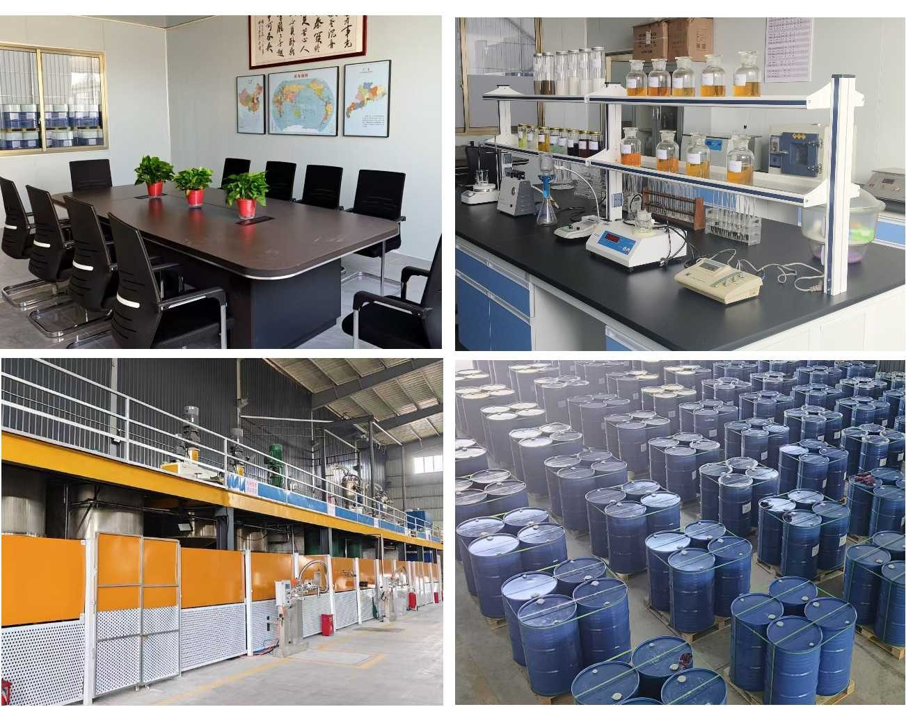

佛山市天辰洁能环保技术有限公司（原佛山市天辰精细化工有限公司）于1999年成立，为中国广东省民营科技企业。二十多年来，公司致力于绿色环保化学品的研发与生产，与中国多所大专院校保持长期的产、学、研合作，先后在清洁制革、生物能源、空气及污水治理技术、石油加工助剂、电力化学品等领域取得多项研发成果，获得多项国家发明专利。
公司自主研发的石化燃料添加剂填补了国内行业空白，率先实现燃气轮机发电机组燃油防腐添加剂的国产化，其中抑钒剂、破乳剂等产品相继替代进口产品，赢得中国重油型燃气轮机发电企业普遍认可和使用，并相继销往中东、南美、非洲等地。
了解更多 →
专注精细功能性化学品研发二十余年，形成电力化学品、油炼制化学品、采油化学品及环境化学与工程四大产品体系，竭诚为石油开采炼制、燃油发电行业提供所需的产品与服务。

TC-200/TC-260/TC-280/TC-300 系列，用于以含钒重油或原油为燃料的燃气轮机发电机组及燃油锅炉的缓蚀防腐，率先实现国产化替代，产品标准成为中国行业标准。
查看详情 →
TC-350/TC-830/TC-860 系列，用于燃气轮机重质燃油的水洗脱水脱盐处理，也可用于石化厂前端原料油的水洗除盐。
查看详情 →
TC-680A/B 型，清除燃气轮机透平系统的灰尘、油垢、积炭等，用于燃气轮机发电机组的在线/离线水洗。
查看详情 →
TC-MD511/TC-MD315 型，用于 FCC 流化催化裂化装置钝钒，保护催化剂活性，适用于石油炼制厂。
查看详情 →产品广泛应用于国内外重油型燃气轮机电厂及石油开采炼制企业
我们的技术团队随时为您提供燃油添加剂与油田助剂的专业解决方案